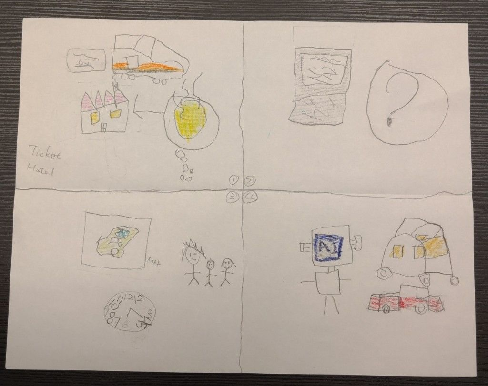

Participant 1 / Image 01
From sketching travel steps to designing assistance
The hand drawing breaks a future travel experience into small scenes: tickets, maps, timing, family movement, and assisted transportation.
It connects to the 2036 activity by turning "what could change?" into parent-child decisions: what is stressful today, what should AI notice, and where should a helpful travel companion step in?